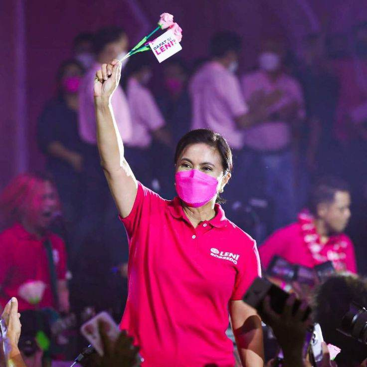

Leni Robredo Maria Leonor "Leni" Gerona Robredo; born Maria Leonor Santo Tomas Gerona; April 23, 1965) is a Filipino lawyer and politician who served as the 14th vice president of the Philippines from 2016 to 2022.
Maria Leonor Gerona Robredo (born on April 23, 1965 in Naga City, Camarines Sur), popularly known as Leni, is an economist, lawyer, and politician serving as the 14th vice president of the Philippines until June 30, 2022. She is the wife of the late Interior Secretary Jesse Robredo. Prior to her political career, she was a researcher, professor, and practising lawyer. She worked as the coordinator of the Naga City-based alternative legal support group Sentro ng Alternatibong Lingap Panligan (Saligan) and founded Lakas ng Kababaihan ng Naga Federation, an organization that provides training and livelihood opportunities for women. In 2013, she was elected as representative of Camarines Sur's third district, and served for one term. In the 2016 vice presidential elections, she was the only female candidate against four males who were all senators. She defeated her closest rival, Ferdinand "Bongbong" Marcos Jr., by a narrow margin. Marcos filed an electoral protest, which the Supreme Court dismissed in a unanimous vote in 2021. In her candidacy as vice president of the Philippines, Leni Robredo stood against male candidates who had previously held positions in the national government. In one memorable debate, she said: “I am a mother who will always look after her children. I will always look after our country. To the six of us, may the best woman win.” She was elected Vice President of the Philippines in 2016. It was not part of her plan to make it this big in politics. Her childhood memories were those of helping her father’s destitute clients and this imbibed in her a sense of duty for people “at the seams of society.” Leni was propelled to the national political scene after the tragic death of her husband in a plane crash in August 2012. She was urged her to run for Congress, and she won a seat representing Camarines Sur province. And by surprise, in 2016, she was asked to be the vice presidential candidate to the Liberal government’s frontrunner Mar Roxas. Leni won by a margin of 200,000 votes ahead of Ferdinand Marcos Jr. the son of the late dictator President Marcos. Leaving him unsatisfied with the results, Marcos filed an election protest in the Supreme Court. She soon found herself out of the cabinet formed by the current populist President Rodrigo Duterte, who favors the Marcos family. That and an onslaught of propaganda against Leni has not stopped her from going to the farthest reach of the country to help the poor build their homes and make a better life. Leni has spoken out against President Duterte’s brutal drug war, which saw the killings of suspected drug dealers in the slums of Manila. She is effectively the leader of the opposition although she prefers to roam the countryside for her “Angat Buhay” (Lifting Life) social campaign for the underprivileged. Involvement of sectors in development: Angat Buhay seeks to empower the marginalized sector, including women, in partnership with the private sector and civil society partners. Part of this endeavor is putting an end to domestic abuse and empowering women toward financial independence. In one interview, she said "Karamihan sa nasalubong namin na mga problema, kahit inaabuso na, parang they would choose to go back to the abusive environment dahil ang pakiramdam niya, hindi niya kayang buhayin iyong sarili niya at saka mga anak." (Most of the problems that we’ve encountered involved women who chose to remain in an abusive environment. This is because a woman feels like she can't provide for herself and her children.) Leni tries to address this by equipping women with skills that would help them start a business and become entrepreneurs. Leni explains that “academic studies have shown that in order to close the gender gap, at least four things should happen: first, make it safe and fair for women to do trade-related businesses; second, bring more women into the workforce and achieve gender parity in the workplace; third, make spaces for female-led enterprises; and fourth, facilitate equal access to technology.” Leni has taken up the torch to keep the dying flames of democracy alive. The space that she creates for women empowerment sparks the flame.